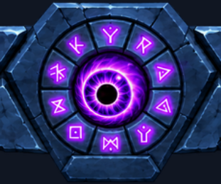
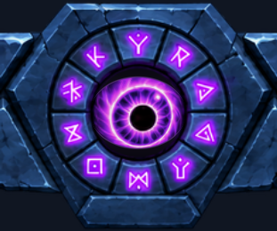
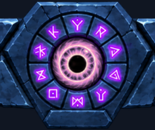
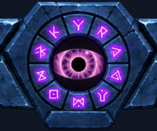
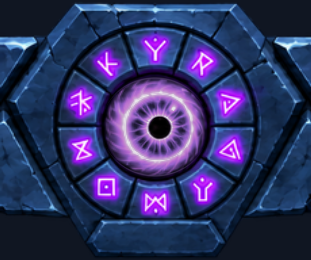
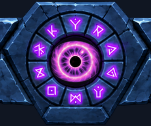
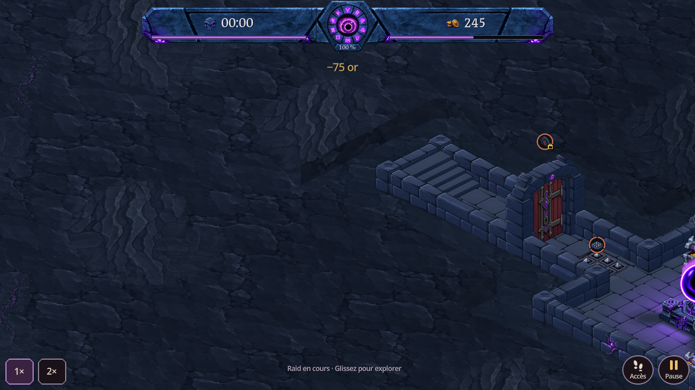
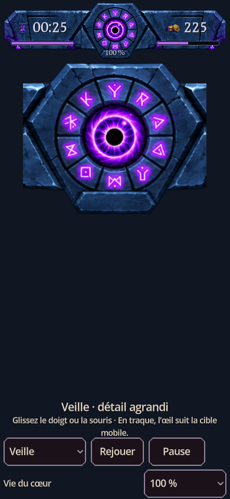
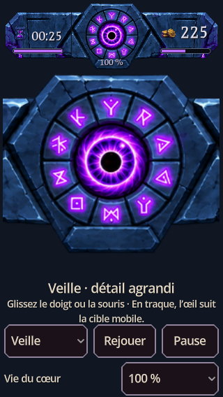

VeilleRegard souple, clignement lent toutes les 6 à 10 secondes.

ObserveSuit la case choisie et le doigt dans les menus. Petit cillement après la pose.

TraqueSuit la position visible du héros, même après un déplacement de caméra.

JubileUn héros meurt : iris ambré, pupille dilatée et une pulsation de lumière.

BlesséLe cœur perd des PV : iris rouge, plissement et bref tremblement intérieur.

FauchéTentative trop chère : regard vers l’or, iris terni et petite pupille.

ColèreUn héros vole de l’or : iris magenta, pupille contractée et frémissement.
Dans le jeu
Captures natives après déplacement de caméra. Le héros actuel est celui de la simulation ; aucun nouveau comportement de héros n’est ajouté.

Scène de contrôle mobile


Vérification native sur ordinateur en cinq dimensions, dont portrait et paysage court. Pas encore testé sur un téléphone physique. Les animations de cette page sont des médias de revue, pas des sprites ajoutés au jeu.